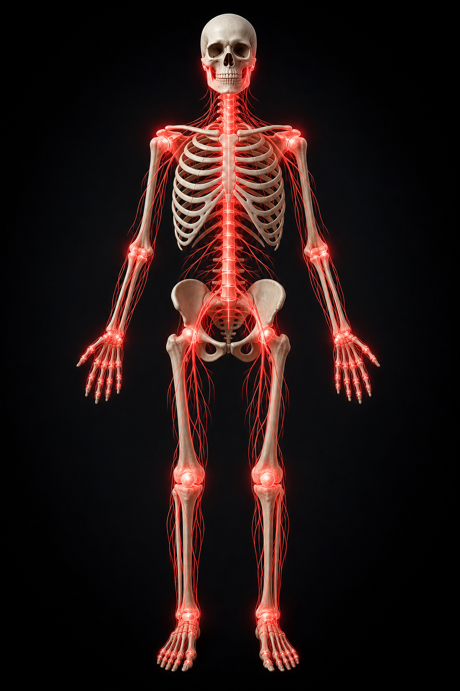

← signalflowANATOMY / LUMBAR STUDY

01
Full-body viewRotating anatomical overview
L4–L5 discInflammation focus
ROTATING · 01 / 03
Illustrative educational visualization — not a diagnostic medical image.

Illustrative educational visualization — not a diagnostic medical image.